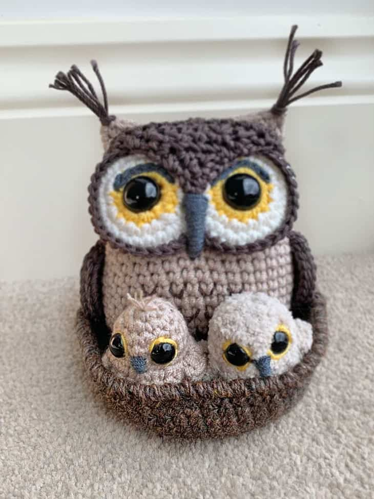

Design: This amigurumi owl features a delightful design with large, expressive eyes, a carefully shaped beak, and intricately detailed feathers. The whimsical charm is accentuated by the choice of colors and the careful arrangement of stitches, making it a captivating work of art.
Size: With a size that fits perfectly into the palm of your hand, the Amigurumi Owl is a portable and cuddly friend. Its compact dimensions make it an ideal companion for both children and adults, bringing joy and comfort wherever it goes.
Craftsmanship: The amigurumi owl showcases the artistry of crochet craftsmanship, with each stitch contributing to the overall character and charm. The attention to detail in creating the wings, talons, and facial features reflects the passion and skill of the artisan.
Features: Adorned with a small, charming accessory like a bow or a tiny hat, the amigurumi owl adds a touch of personality and uniqueness. Its handmade nature ensures that each piece is one-of-a-kind, adding sentimental value to this adorable creation.
Colors and Variants: Available in an array of delightful color options, the Amigurumi Owl provides a selection for individuals to choose a companion that resonates with their personal style and preferences.
Amigurumi Owl
Description:
The Amigurumi Owl is a whimsical and charming creation that seamlessly blends craftsmanship with endearing aesthetics. Crafted for enthusiasts who appreciate the artistry of handmade plush toys, this amigurumi owl embodies a perfect fusion of creativity, attention to detail, and a touch of playfulness.
Details:
Crafting: The Amigurumi Owl is meticulously handcrafted using soft and vibrant yarn, showcasing the artisan's dedication to creating a delightful and huggable companion. The intricate crochet work brings out the unique personality of the owl, making it a standout piece in any collection.Design: This amigurumi owl features a delightful design with large, expressive eyes, a carefully shaped beak, and intricately detailed feathers. The whimsical charm is accentuated by the choice of colors and the careful arrangement of stitches, making it a captivating work of art.
Size: With a size that fits perfectly into the palm of your hand, the Amigurumi Owl is a portable and cuddly friend. Its compact dimensions make it an ideal companion for both children and adults, bringing joy and comfort wherever it goes.
Craftsmanship: The amigurumi owl showcases the artistry of crochet craftsmanship, with each stitch contributing to the overall character and charm. The attention to detail in creating the wings, talons, and facial features reflects the passion and skill of the artisan.
Features: Adorned with a small, charming accessory like a bow or a tiny hat, the amigurumi owl adds a touch of personality and uniqueness. Its handmade nature ensures that each piece is one-of-a-kind, adding sentimental value to this adorable creation.
Colors and Variants: Available in an array of delightful color options, the Amigurumi Owl provides a selection for individuals to choose a companion that resonates with their personal style and preferences.
Price: Rs. 500 Rs